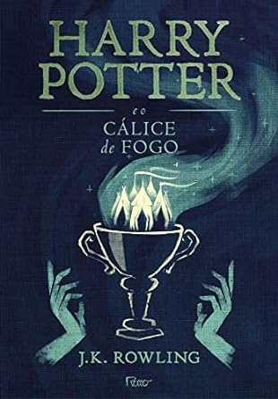

Harry Potter
1. Harry Potter e a Pedra Filosofal

“Harry Potter e a Pedra Filosofal” (Harry Potter and the Philosopher’s Stone no Reino Unido, Harry Potter and the Sorcerer’s Stone nos EUA) – Publicado em 1997.
Somos apresentados a um garoto tímido, uma espécie de gata borralheira. Ele mora embaixo de um armário, é maltratado pelos tios, usa apenas roupas usadas do primo, óculos quebrados e é tratado como estorvo.
Ao completar 11 anos, uma série de eventos estranhos começam a acontecer. Ele recebe uma carta (o que nunca ocorrera antes) que logo é extraviada pelo seu tio. Diversas corujas começam a chegar diariamente à casa em que mora, mas todas as cartas são capturadas pelo tio, até que ele leva a família, e Harry junto, para um endereço secreto (para fugir das cartas).
Lá, teremos a primeira grande revelação de toda a saga de Harry Potter. Um homem gigante chamado Hagrid encontra-os e entrega a carta pessoalmente à Harry. Nosso protagonista continua sem entender nada e o portador das notícias revela que ele era um bruxo. A carta era um convite para que estudasse na mais prestigiada escola de magia do país, chamada Hogwarts.
2. Harry Potter e a Câmara Secreta

Harry Potter e a Câmara Secreta é o livro 2 da sequência de Harry Potter. Depois de férias aborrecidas na casa dos tios trouxas, está na hora de Harry Potter voltar a estudar.
No entanto, a tradicional estação secreta em King’s Cross está fechada por obra de um duende que quer impedir que Harry compareça à escola (ele e Rony são obrigados a roubar o carro de Arthur Weasley para chegar lá).
Nesse livro, temos uma série de alunos sendo petrificados e, a cada acontecimento, uma mensagem sobre a Câmera Secreta é deixada nos corredores – o que instiga nossos protagonistas a descobrirem do que se trata esse cômodo (que era tido até então como lenda).
3. Harry Potter e o Prisioneiro de Azkaban
Harry Potter e o Prisioneiro de Azkaban” (Harry Potter and the Prisoner of Azkaban) – Publicado em 1999.
Para mim o melhor livro da série, Harry Potter e o prisioneiro de Azkaban trata do ressurgimento de Sirius Black, importante personagem da história que até então estava preso em Azakaban. É o terceiro volume da ordem dos livros de Harry Potter.
As aulas estão de volta à Hogwarts e Harry Potter não vê a hora de embarcar no expresso a vapor que o levará de volta à escola de bruxaria. Mais uma vez suas férias na rua dos Alfeneiros foi triste e solitária.
4. Harry Potter e o Cálice de Fogo

Harry Potter e o cálice de fogo é o quarto livro da sequência de Harry Potter. Nesta aventura, o feiticeiro cresceu e está com 14 anos.
O início do ano letivo de Harry Potter reserva muitas emoções, mágicas, e acontecimentos inesperados, além de um novo torneio em que os alunos de Hogwarts terão de demonstrar todas as habilidade mágicas e não mágicas que vêm adquirindo ao longo de suas vidas.
5. Harry Potter e a Ordem da Fênix
“Harry Potter e a Ordem da Fênix” (Harry Potter and the Order of the Phoenix) – Publicado em 2003.
Harry Potter e a ordem de fênix é o quinto volume da ordem dos livros de Harry Potter. A partir deste livro começa a ficar claro que a autora observou que sua audiência estava crescendo, ou seja, deixando de ser adolescente e se tornando adulta, e paulatinamente os livros vão ganhando uma temática e escrita mais voltada para esse público.
Aos 15 anos, Harry continua sofrendo a rejeição dos Dursdley, sua estranha família no mundo dos ‘trouxas’. Também continua contando com Rony Weasley e Hermione Granger, seus melhores amigos em Hogwarts, para levar adiante suas investigações e aventuras.
6. Harry Potter e o Enigma do Príncipe
“Harry Potter e o Enigma do Príncipe” (Harry Potter and the Half-Blood Prince) – Publicado em 2005.
Harry Potter e o enigma do príncipe é o sexto livro da sequência de Harry Potter. Ele dá continuidade à saga do jovem bruxo a partir do ponto em que o livro anterior parou o momento em que fica provado que o poder de Voldemort e dos Comensais da Morte, seus seguidores, cresce mais a cada dia, em meio à batalha entre o bem e o mal.
A onda de terror provocada pelo Lorde das Trevas estaria afetando, até mesmo, o mundo dos trouxas, e sendo agravada pela ação dos dementadores, criaturas mágicas aterrorizantes que ‘sugam’ a esperança e a felicidade das pessoas.
Harry, que acabou de completar 16 anos, parte rumo ao sexto ano na Escola de Magia e Bruxaria de Hogwarts, animado e ao mesmo tempo apreensivo com a perspectiva de ter aulas particulares com o professor Dumbledore, o diretor da escola e o bruxo mais respeitado em toda comunidade mágica.
7. Harry Potter e as Relíquias da Morte
“Harry Potter e as Relíquias da Morte” (Harry Potter and the Deathly Hallows) – Publicado em 2007.
Harry Potter e as relíquias da morte é o sétimo e último volume da ordem dos livros de Harry Potter. Aqui a temática do livro abandona completamente a ligação ainda infanto-juvenil e se conecta muito com temas mais pesado e adultos.
Voldemorte está cada vez mais forte e Harry Potter precisa encontrar e aniquilar as Horcruxes para enfraquecer o lorde e poder enfrentá-lo.
Nessa busca desenfreada, contando apenas com os amigos Rony e Hermione, Harry descobre as Relíquias da Morte, que serão úteis na batalha do bem contra o mal.